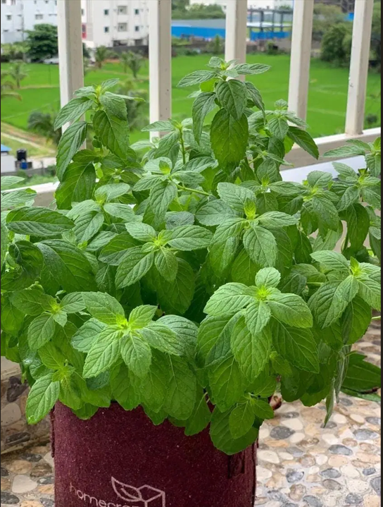

Protect your crops instantly. Upload a leaf image and let our advanced MobileNetV2 neural network diagnose up to 38 different plant conditions with high accuracy.
Secure, local testing block. No data logged.

Understanding the core engine driving our diagnostic precision
PlantCare AI utilizes state-of-the-art Transfer Learning mechanisms. We adopted MobileNetV2 as our base architectural framework due to its incredible efficiency on mobile devices without sacrificing deep diagnostic accuracy.
Three simple steps to obtain comprehensive agricultural diagnostics
Take a clear photo of the affected plant leaf. Good lighting yields the best prognostic data.
Our deep learning MobileNetV2 model processes the pixels extracting vital disease features.
Instantly receive the specific disease condition along with expert recommended treatment protocols.
Designed for scalability, precision, and ease-of-use.
Backed by deep neural networks ensuring pinpoint diagnostic precision for early intervention.
Optimized algorithms deliver instantaneous actionable results right on your screen.
Zero processing queues; get your agricultural query matched in milliseconds.
Fully responsive platform designed to operate seamlessly whether in the farmhouse or deep in the field.
Architecture built to handle large farms and expanding future datasets with minimal refactoring.
Integrated REST endpoints making cross-platform applications integration effortless.
Integrate our API natively into camera drones or field sensors to track orchard health systematically.
The perfect backbone for consumer-facing apps allowing home gardeners to cure their backyard plants.
An excellent visual tool assisting students and researchers in pathology classifications and case studies.
A mix of top-tier foundational web standards and Python machine learning ecosystems.
The minds engineering the future of plant health diagnostics.
Team Lead
Member
Member
Member
Transfer learning involves taking a model trained on a large dataset and fine-tuning it for a specific task. We use it to adapt MobileNetV2, an architecture originally designed for general image classification, specifically for recognizing 38 types of plant diseases with minimal computational overhead.
Our optimized Flask backend, coupled with lightweight MobileNetV2 weights, typically returns a diagnosis in under 500 milliseconds depending on your connection speed.
No, a standard smartphone camera is sufficient. However, ensure the leaf is the main focus, well-lit, and placed against a neutral background if possible to achieve the highest ML confidence.
No. For this demonstration system, your images are processed dynamically and immediately discarded from the volatile memory to ensure privacy and security, unless you explicitly opt into the global registry.
Have questions about the algorithm, potential partnerships, or API access? Reach out to our team.